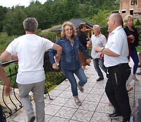
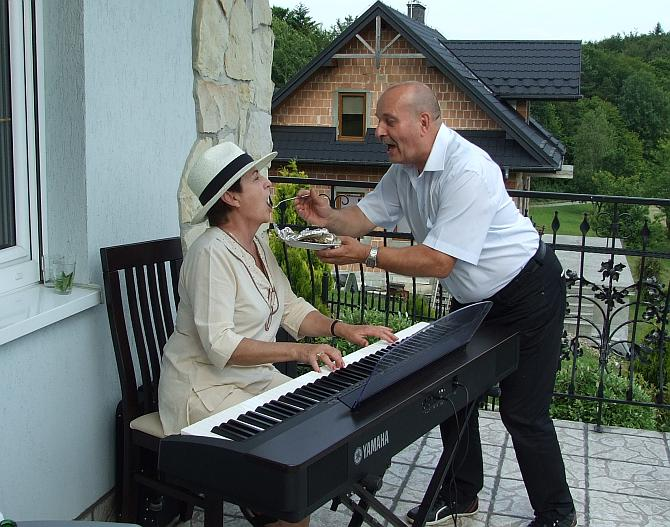

do aktualności
do aktualności2014-06-29
Kończymy nasz rok szkolny „wyjazdowo”. Jesteśmy na miejscu. Ale tu pięknie!!!
A na tym tle, kto??? Wiadomo MY, czyli Camerata.
Zobaczcie jak się rozrasta.
O! Coraz ich więcej.
No chyba się klonują a może przez pączkowanie?
No, ale to i tak nie wszyscy. Reszta w domu szykuje się do zakończenia, oczywiście uroczystego, roku szkolnego naszego chóru. A więc zaczynamy. Od czego? Wiadomo od podziękowań.
Podziękowań tyle było, że nie nadążałam z robieniem zdjęć. I na koniec Dyrygentka i Prezeska, trudno zgadnąć, która, której dziękuje, ale czy to ważne:)
Teraz super jedzonko na wzmocnienie, czyli śniadanio-obiado-kolacja :)
A teraz na taras i śpiewy, tańce, hulanki. Jak to zawsze u nas.
Do Yamahy na cały dzień zasiadła dzisiaj Ewa. Gra i śpiewa.
Były też występy. Oto Anka i Zbyszek. Szkoda, że tego nie słyszycie!!!
To zdjęcie mówi jaki był występ, nie muszę opisywać.
Były też tańce, a co?

Mówi się „nie strzelać do pianisty” a u nas pilnujemy, aby pianistka nie „padła” z głodu, czyli hasło: Dokarmiać pianistkę!!!

A obok tarasu szykuje się kolacja. Panowie grillują.
Impreza zbliża się pomału do końca. Trzeba wracać, o czym przypomina nam pogoda, zaczęło padać. A to mieszkaniec tego miejsca, który cały dzień siedział na świerku i usiłował nas przekrzyczeć a właściwie prześpiewać. Z Cameratą nie miał szans, więc teraz odpocznie.
Żegnam się z Wami do września. Wspaniałych wakacji!!
do aktualności


 Prowadzenie strony: Małgorzata Wysocka-Cebula
Prowadzenie strony: Małgorzata Wysocka-Cebula